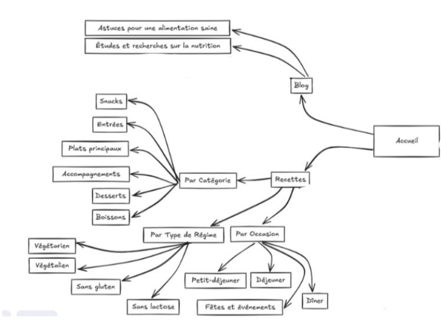
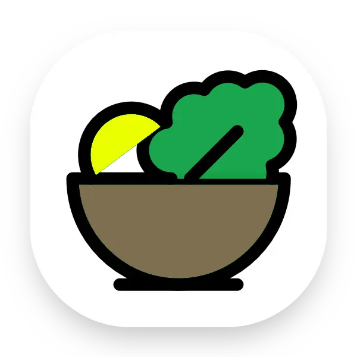

← Retour aux réalisations
Réalisation B1.4 - Travailler en mode projet
Sous-catégories
- Analyser les objectifs et les modalites d'organisation d'un projet
- Planifier les activites
- Evaluer les indicateurs de suivi d'un projet et analyser les ecarts
TP réalisés (squelette)
Chaque B1.x peut contenir de 1 à 3 TP. Sélectionnez un TP pour renseigner ses images, son descriptif et les parties du B1.4 qu'il valide.
B1.4 - site Vitalia
Travail en mode projet sur le site Vitalia avec repartition des taches, planification des activites et suivi de l'avancement. Cette organisation m'a permis de mieux coordonner les actions, d'anticiper les priorites et de respecter les echeances fixees au sein du groupe.


Compétences développées
Résultat / Preuves
Je pense avoir validé le bloc B1.4 parce que dans le TP B1.4 - site Vitalia, j'ai validé la sous-catégorie Planifier les activités du B1.4.